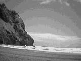
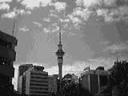
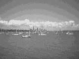

Day 03 — Tuesday 2 Jan
We had breakfast on the plane at around 3am, and landed in Auckland at 5:15am, about 10 minutes early. We cleared immigration, collected our baggage and went through customs really quickly. We rang Cayne from the airport at 6am to let him know we were on our way, and got a cab.
We arrived at Cayne's place in Remuera 15 minutes or so later. We had a chat, a cup of tea, some juice and gave Cayne the kite we'd brought him. We had a much needed shower before deciding to head off to a beach — the 2nd is a public holiday in New Zealand. We thought we should take his kite with us, and so started to attach the cables to it. Big mistake! The diagram for the suggested knot was really hard to follow so we decided to knot it using the same method as we'd used on our kite. The first one worked okay, but the second was just a huge tangled mess and it took us the next 2 hours to sort it out.
Cayne
After finally sorting the kite, we walked off to the local supermarket to get some picnic type food to take to the beach with us.
We set off and Cayne drove us the more touristy route, via Newmarket, Parnell and past the city before heading off to the coast. We took a wrong turn at some point and ended up in Huia which involved a drive through the Waitakere Ranges Regional park, and us stopping off a couple of times to admire the view. The Waitakere Ranges used to support kauri forests but they were logged almost to extinction in the 19th century. We retraced our steps and followed the correct road to get to Piha (pronounced pea-ha). Piha beach is a black, iron-sand beach. Apparently when Cayne was at school, they visited a similar black sand beach and discovered that the particles had the same properties as iron filings. Piha has roaring waves and is surrounded by bush covered hills. The Lion Rock sits just off the beach and many people were walking up it. Despite a strong breeze, the sun was warm and very welcome. We had our picnic lunch before unfurling Cayne's kite and spending an hour or so playing with it, all of us getting wet legs as we walked backwards into the sea at one point or another.
Cayne drove us back to his place, and after attempting to wash the clinging sand off our feet and legs, Rich and I called it a day and went to sleep (at 7pm!).

Lion Rock and Piha
Day 04 — Wednesday 3 Jan
The day started off gently. We both woke up feeling refreshed after our long sleep and slowly got the day going, with breakfast and showers. Once we were ready to face the day we walked to the bus stop and caught bus 625 to downtown.
Once in town we wandered up Queen Street until we got to the Tourist Information centre where we bought a road atlas, a where-to-stay guide and a couple of postcards, as well as picking up a few leaflets. We stopped for lunch in a cafe in the Civic building before making our way to New Zealand's tallest structure — the Skytower.
We paid our admission and wandered through to the audio visual display about New Zealand and Auckland before catching a lift to the Main Observation levels. There are three main levels to be visited — the Main Observation level has glass panels on the floor in places so you can see the road a long way below you. We both walked across the glass slowly and carefully. There are notices stating that the 38mm thick glass is as strong as the concrete but it is still hard to trust it and walk across. We watched some kids jumping on it and thought how much more self-preservation/fear you get as you get older. We had paid the extra $3 to go the skydeck which offered really good views across the city. This was reached by a special lift. After spending quite a while there we went to the outdoor observation level which in some ways was my favourite as not only where the views as good, but there were benches to sit on and the sun was shining down. It was really relaxing. All of the levels have glass all the way around, so all photos have to be taken through that. We stopped at the cafe on the lower observation level before leaving the skytower.
One of the things we'd seen from the tower was a park, and so we headed off to find it. This was Albert Park and was very peaceful. We had also spotted another interesting looking building and so went to investigate. This turned out to be Auckland town hall which had a small park attached to it. There was a small bungy type thing for kids there, this involved a trampoline and 2 bungy cords attached, one at each side, to the harness. The participant could then bounce off the trampoline and get extra lift from the bungys.
Next stop was a walk down Queen street for a spot of retail therapy — we bought one item each, both clothing. We'd spotted a huge Father Christmas on the Whitcoullis building from the tower and had thought that he didn't look very jolly, but closer up he looked positively evil, one eye kind of winked, whilst one finger kind of beckoned in a sinister "Come here little child" way — enough to give you nightmares.
We then wandered back along Queen Street to meet Cayne after his first day back at work. We decided to head to the waterfront and stopped for beers on one of the piers which was really pleasant. We had no real plans at this time, so we walked back up Queen street to the town hall (where I made Rich and Cayne stand in front of a well-lit Christmas tree so I could take a photo — Christmas decorations seem weird to me when the sun is shining and it's a warm day).
Cayne proposed a plan. So, we walked off to the Auckland Domain, a big park which surrounds the Auckland War Memorial Museum. This domain is one of Auckland's oldest parks and the museum is a really impressive looking building. We carried on walking through the domain and got to Newmarket where we hunted for a place to eat. After quite a bit of wandering around we settled on a turkish place which was good.
After our meal, we walked to the bus stop and waited for a bus to take us back to Remuera Road. By the time we got home it was 11:30pm and bedtime.

The skytower dominates the Auckland landscape
Day 05 — Thursday 4 Jan
Another relaxing day. We both slept well, and as yesterday took things easily over breakfast, showering etc.
We took the bus to downtown, and got another bus from the station to Kelly Tarlton's Antarctic Encounter and Underwater World.
When you enter Kelly Tarlton's, you go through the Antarctic bit first which was my favourite bit. There is a penguin colony living in a -7 degree C area and it was great to be able to watch them. There is also a replica of Scott's 1911 Antarctic hut which was really interesting. Then there is a snow cat ride, supposedly to illustrate what it's like in Antarctica with the penguins being one of the major attractions. The snow cat also goes past a simulated Orca attack as well as political information about the antarctic treaty. Once through the Antarctic Encounter, we moved on to the Underwater World — this is housed in old stormwater holding tanks and an acrylic tunnel runs through the centre. There are 2 main tanks, one holding mainly fish (these were being hand fed by a diver whilst we were there) and the other holding sharks and huge sting rays. I kept forgetting that the glass distorts the size, and these fish were a third as large again. There is a moving platform which you stand on to move around, although there is the option of stepping off the track to see more of something. Kelly Tarlton was a diver and he conceived the underwater world but unfortunately died 2 months after it opened.
On leaving Kelly Tarlton's, after about a 2 hour visit, we stopped at "Jacques", the cafe next door, for lunch overlooking the harbour.
After our lunch we decided to walk on a little further (out of Auckland) and ended up in Mission Bay. This is one of the town beaches and had lots of people around, some windsurfing, some swimming and some just sunbathing. We spent quite a while just relaxing before deciding to have a beer at "Bar Comida", a nearby tapas bar and cafe.
Next we caught a bus back into town and, after a bit more clothes shopping, met Cayne at the bus station to head back to his flat. We relaxed at his for a while before heading off to Mount Eden, the highest volcanic cone in the area. The view was great, especially as it was approaching sunset. You can get down into the crater which we did, although getting back up again was a bit of a struggle. It was a lovely place to spend some time. At the summit there was a horizontal sign post to many major cities. According to that, London is 18339 kilometres away.
By now we were getting hungry again and so we went and got some takeaway chinese from Remuera which we took back to Cayne's place and ate with a very tasty bottle of Cabernet Sauvignon.

View of Auckland from near Kelly Tarltons
Move on to Northland or go back to the contents page
Comment on the Auckland section